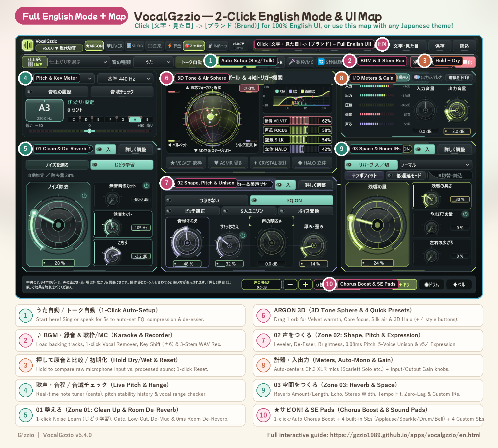

VocalGzzio 5.4.0 · Windows + macOS · Standalone App + VST3 / AU + Direct WDM Driver
Studio-Grade Karaoke Streams & Vocal Recording.
One Screen. Zero Routing Headaches.
No DAW, no complex virtual cable routing, and no acoustic booth required. Everything you need for VTuber karaoke streams (OBS / Twitch / YouTube), cover recordings, and VRChat / Discord voice chat in a single self-contained studio.
Featuring 〰️ Tail Vibrato & Vowel Formant EQ, 🌉 Mix-Voice Bridge, 🎧 Bone-Conduction Cue Monitor, 🕳️ Spectral Unmasker, 🏠 Zero-Lag Room De-Reverb, 🎯 0.08ms Pitch Correction, ✨ 1-Click Vocal Remover, and 💿 3-Track Simultaneous WAV Export (-14 LUFS Master + Wet + Dry).

Why Streamers, VTubers & Vocalists Switch to VocalGzzio
〰️ Vocal Expression & 🌉 Mix-Voice Bridge (v5.4)
Natural Tail Vibrato adds a warm 5.5Hz shimmer only to sustained notes (>180ms). Vowel Formant EQ stops tight "ee/eh" vowels from sounding thin or shrill by balancing chest ($F_1$) and nasal ($F_2$) resonance in real time, while Mix-Voice Bridge synthesizes missing harmonics across register breaks.
🪶 Whisper Lifter, 🎯 Sweet Spot & 🎧 Cue Monitor (v5.3)
Upward Whisper Lifter raises quiet details up to +4.5dB without squashing loud peaks, while Dolby-A Air adds silky 4-band sheen only on voiced vowels. Bone-Conduction Cue Monitor subtracts 240Hz skull resonance in your headphones so you can pitch effortlessly without altering your OBS/WAV output.
🕳️ Spectral Unmasker & 🎢 BGM Vocal Rider (v5.2)
Never get buried under a loud backing track again. While you sing, Spectral Unmasker dynamically carves a -5.0 dB pocket in the center (Mid) of the backing track at your exact vocal frequencies while leaving stereo guitars and sub-bass untouched. Meanwhile, BGM Vocal Rider rides your vocal fader (-2.5 to +3.5 dB) to match chorus energy.
🏠 Zero-Lag Room De-Reverb & 🎯 0.08ms Pitch
Singing in an untreated bedroom? Room De-Reverb subtracts boxy room reflections (460Hz resonance and slapback tail) with 0.0ms latency. Combine it with 0.08ms Pitch Correction, 1s Auto-Key & BPM Sync, 1-Click Vocal Remover, 4 Studio Mics (800G/U87/SM7B/ASMR), and 3-Stem WAV Export.
📚 Technical Guides & Developer Notes (English)
🎤 OBS & VRChat Karaoke Stream Setup Guide
Why setting up a karaoke stream in OBS & VRChat is usually so painful—and how to get 0.08ms pitch correction, auto-key sync, and spectral unmasking on a single screen without a DAW or Voicemeeter.
🔧 Fixing the Yamaha AG03 / AG06 "BZZZZ" Buzz Bug
Why the Yamaha AG03/AG06 and Steinberg USB Driver (ysusb_w10_64.sys) suddenly blast a loud buzzing noise when launching DAWs or voice chat—4 root causes and how to fix them.
🕰️ Dev Note: The 0.08s Touch-Knob Drift & Time Machine
Why lifting your finger off a tablet screen shifts a knob by 0.5 dB in the final 80 milliseconds—and why we kept all historical UI generations inside VocalGzzio with zero idle CPU load.
Free Trial ($0) vs. Full Version (One-Time Purchase)
We believe you should always test audio software with your own voice, microphone, and room before paying a cent. The Free Trial includes the exact same DSP engine, 19 visual themes, and virtual driver as the Full Version.
| Feature | Free Trial ($0) | Full Version (¥2,500 JPY / ~$17–$19 USD) |
|---|---|---|
| DSP Audio Engine, 19 Themes & Generation Time Machine | Included | Included (Unrestricted) |
| Vocal Expression (v5.4), Cue Monitor (v5.3), Spectral Unmasker, Vocal Remover & 3-Stem WAV Export | Included | Included (Unrestricted) |
| Continuous Audio Output | Brief 0.6s volume dip once every 60 seconds | No volume dips (Ready for live streams & recording) |
| Save Settings, Noise Profile & Setlists on Exit | Resets on app close | Auto-saves everything (Ready in 0 seconds on launch) + A/B Compare |
| Commercial Use & OS License | For hardware/voice testing only | Full commercial rights (monetized YouTube/Twitch streams, covers, no credit required). Includes both Windows & macOS builds (up to 3 devices, free updates). |
📖 Built-In 100% English UI Mode & 10-Second Visual Map
💡 Built-in 100% Full English UI Mode (2 Clicks!): Click 文字・見た目 (Text & Look, top-right bar) and select ブランド (Brand Mode). Every button, knob label, 3-axis preset, zone header (01 CLEAN / 02 CHARACTER / 03 SPACE), and hover tooltip switches to 100% English! Or, if you use any of the 19 cute pastel themes, this visual map and cheat sheet give you full control in 10 seconds:

| Japanese Label on Screen | English Meaning | What It Does |
|---|---|---|
| 文字・見た目 → ブランド | Switch to 100% Full English UI Mode | 2-Click English Toggle! Click 文字・見た目 at the top-right bar and select ブランド (Brand) to switch all buttons, knobs, 60 presets, and tooltips into 100% English. |
| 🎤 うた自動 / 💬 トーク自動 | Auto-Setup (Sing / Talk) | Start here! Click this and sing or speak for 5 seconds. VocalGzzio analyzes your mic and voice to set optimal EQ, compression, and de-essing automatically. |
| 🎤 歌枠 ⇄ 💬 雑談MC | Singing Mode ⇄ Talk / MC Mode | 1-click toggle between lush vocal reverb for songs and crisp, dry voice for chatting with your viewers between tracks. |
| 👂 押して原音と比較 | Hold to Compare (Dry / Wet Bypass) | Hold or click to compare your raw unprocessed mic input against the processed VocalGzzio sound. |
| 〰️ 語尾ビブラート / 🗣️ 母音フォーム統一 | Natural Tail Vibrato & Vowel Formant EQ (v5.4) | Fades in a natural 5.5Hz vibrato on sustained notes (>180ms) and balances tight "ee/eh" vowels so every vowel shares a rich chest core. |
| ⚡ 歌い出しグルーヴ / 🌉 ミックス＆胸鳴り | Onset Groove & Mix-Voice Bridge (v5.4) | Shapes the first 35ms of vocal attacks to lock into the beat and bridges missing harmonics across chest-to-head voice transitions. |
| 🪶 ささやき浮上 / 💎 倍音ドルビーAエアー | Upward Whisper Lifter & Dolby-A Air (v5.3) | Lifts quiet whisper details up to +4.5 dB without squashing peaks, and adds 4-band harmonic air only while voiced vowels are sung. |
| 🎯 音程追従スイート / 🎧 歌い手モニター補正 | Pitch-Tracked Sweet Spot & Cue Monitor (v5.3) | Tracks your pitch ($f_0$) to add chest body on high notes, and removes 240Hz skull bone-conduction mud in your headphones without changing OBS/WAV output. |
| 🕳️ 声ポケット掘り / 🎢 伴奏連動ライダー | Spectral Unmasker & BGM Vocal Rider (v5.2) | Carves up to -5.0 dB out of competing mid-channel frequencies in the backing track only while you sing, and rides your vocal fader (-2.5 to +3.5 dB) in choruses. |
| 🏠 部屋鳴り消し / 🌬️ 息継ぎ・サ行セパレート | Zero-Lag Room De-Reverb & Velvet Split (v5.2) | Removes boxy room reflections (460Hz bedroom resonance) in 0.0ms, tames loud breath inhales (-6.5 dB), and separates vowels from harsh sibilants. |
| 🧹 ノイズ学習 / 💧 ペチャ音瞬間除去 | Learn Room Noise / Mouth De-Click | Learns your PC fan or AC hum in 1 click, and removes mouth clicks/lip smacks with zero latency. |
| 🎙️ マイク質感 (800G / U87 / SM7B / ASMR) | Studio Mic Modeler | Reshapes your microphone's tone and harmonic warmth into legendary studio mics with 0.0ms added latency. |
| 🎵 BGM・録音 → ✨ ボーカル除去 | BGM Player → Vocal Remover | Load any song file (WAV/MP3/FLAC) and click to strip the original center vocal for instant karaoke practice. |
| キー変更 (-6 〜 +6) & 🎼 キー＆BPM自動反映 | Key Shift & Auto-Key/BPM Sync | Transpose the backing track in semitones and automatically lock pitch correction & harmonies to the song's scale. |
| ★ サビ盛 (ON / 🤖自動 / OFF) & 🎵 自作SE 4枠 | Chorus Boost & 8 Live SE Pads (4 Built-in + 4 Custom) | Automatically lifts vocal presence & reverb in choruses, plus 4 built-in SE pads and 4 custom audio file pads (.wav/.mp3/.flac/.ogg/.aiff). |
| ⏪ 直前30秒を保存 / ● 録音 | Save Last 30 Sec / Record WAV | Exports 3 WAV files at once: Wet (processed vocal), Dry (raw vocal for mixing), and -14 LUFS Full Mix. |
| 🎧 自分の耳への返しミュート | Mute Self-Monitor (Direct Monitor Mode) | If you already monitor your voice directly through your audio interface hardware, click this so you don't hear a doubled voice while OBS still receives the full processed sound. |
| 🛠 cluster・通話 音消え一発修復 | 1-Click VR / Voice Chat Audio Fix | Fixes Windows communications ducking, sample-rate mismatches, and missing audio in VRChat, cluster, and Discord. |
Compatible with 60+ Brands & 160+ Audio Interfaces, USB Mics & VR Headsets

| Category | Supported Models & Built-in Hardware Protections |
|---|---|
| Music Production Interfaces | Focusrite Scarlett Solo / 2i2 / 4i4 (Gen 1–4) (Auto-centers Ch.2 XLR mic on Solo!), Steinberg UR12 / UR22C / IXO12 / IXO22, MOTU M2 / M4 / M6 (Auto-excludes Ch.3–4 PC loopback), SSL 2 / 2+ MKII, Universal Audio Volt / Apollo, Audient iD4 / iD14 / EVO 4 / EVO 8, Roland Rubix22 / 24 / 44, PreSonus, Arturia MiniFuse, TASCAM US-HR, Behringer UMC (No ASIO4ALL needed!). |
| Streaming Mixers | YAMAHA AG03 / AG03MK2 / AG06MK2 / ZG01 (Includes automatic 0.35s feedback circuit breaker if you forget to turn off hardware LOOPBACK!), Elgato Wave XLR / Wave:3, RODECaster Pro / Duo, TC Helicon GoXLR, Roland BRIDGE CAST / GO:MIXER PRO-X / VT-4, audio-technica AT-UMX3, FIFINE SC3. |
| USB Mics, Gaming DACs & VR Headsets | Shure MV7 / MV7+ / MV6, Audio-Technica AT2020USB-X / XP, Blue Yeti, HyperX QuadCast, Razer Seiren, FIFINE K688 / AM8, Sound Blaster GC7 / G6, SteelSeries GameDAC Gen2, Meta Quest 3 / 3S / 2 / Pro, Valve Index, HTC VIVE, PICO 4. |
System Requirements & How to Purchase from Overseas
- Windows 10 / 11 (64-bit): Includes Standalone App (
VocalGzzio.exe),VST3Plugin, and Microsoft WHQL-signed Virtual Audio Driver (VocalGzzio Driver (WDM)). - macOS 11 or later (Apple Silicon M1/M2/M3/M4 & Intel Universal): Includes Standalone App,
VST3, andAU (Audio Unit)installer package (.pkg). - Easy International Checkout on BOOTH: BOOTH supports PayPal, Rakuten Pay, and major international credit/debit cards, with English UI language toggle available at the top right of the BOOTH page. Both Windows and macOS versions are included in a single purchase.